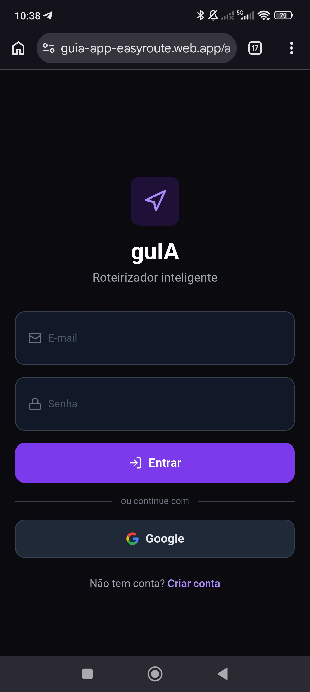
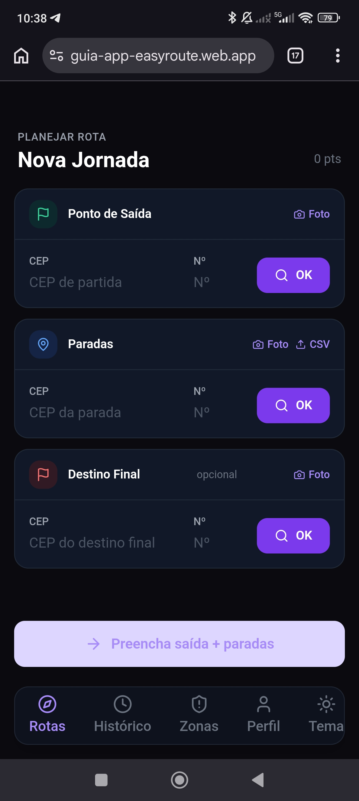
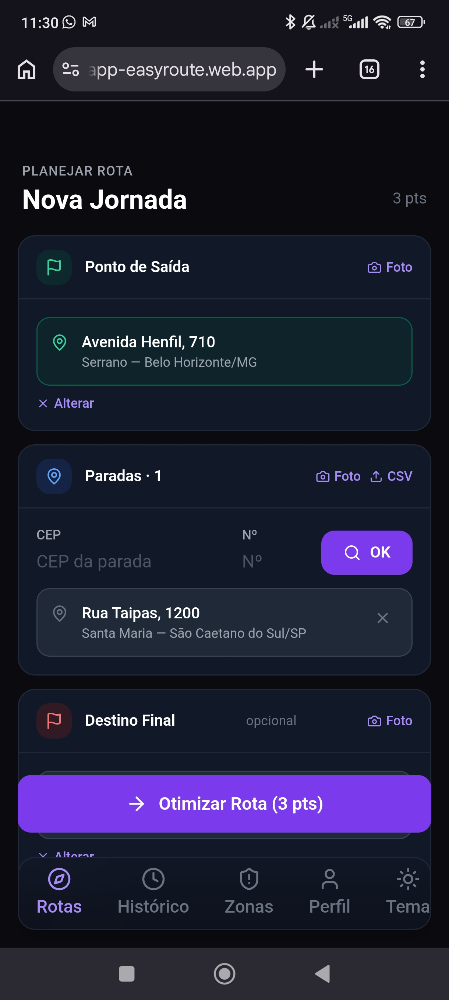
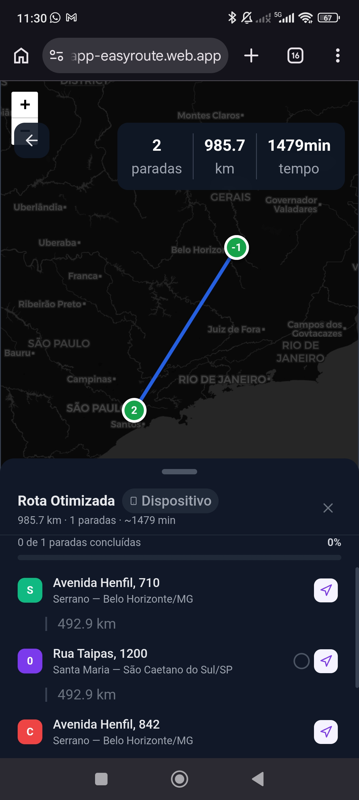
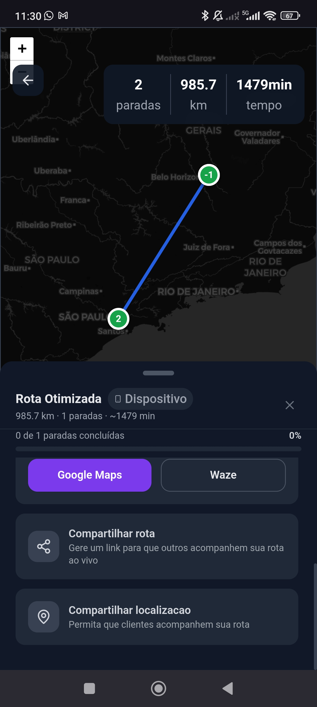
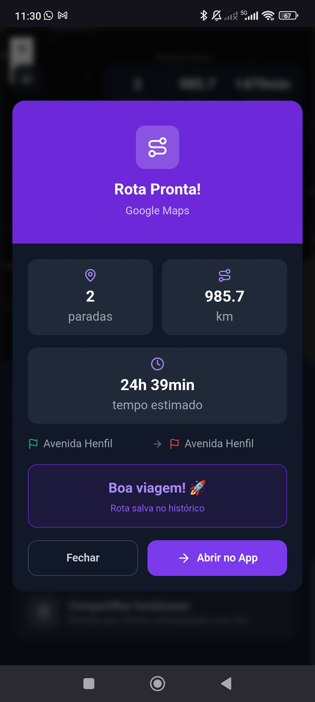

Otimização de Rotas: O Método por Trás da guIA
Transformando pesquisa qualitativa em uma interface de alta performance para logística. Uma exploração do rigor processual, do rascunho ao handoff técnico.
Pesquisa Qualitativa
Mapeamento imersivo da operação logística. Identificação de pontos de dor, analisando a carga cognitiva dos motoristas.
Criação de Protótipo
Tradução dos insights em wireframes interativos de alta fidelidade. Foco em arquitetura de informação densa, porém escaneável.
Validação com Usuário
Testes de estresse da interface simulando cenários reais (baixa conectividade, áreas de toque). Refinamento de hitboxes e contraste cromático.
Geração de PRD
Documentação de requisitos. Definição clara de todos os fluxos lógicos, edge cases de roteirização e comportamento do sistema diante de falhas de API.
Handoff Técnico
Especificações para o time de engenharia. Tokens de design mapeados (Geist, paleta Deep Dark), assets estruturados e lógica de estado documentada.





